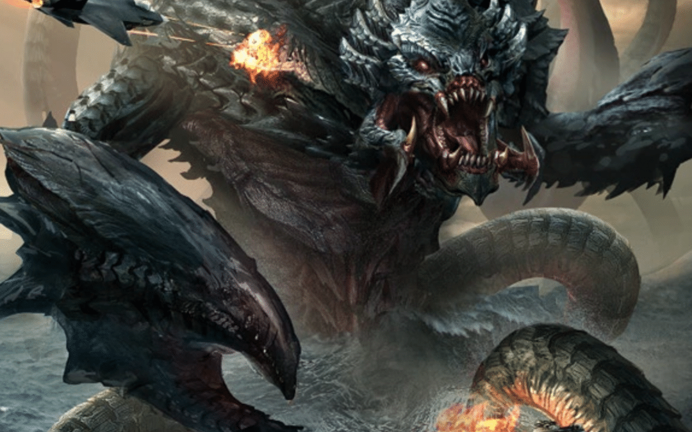
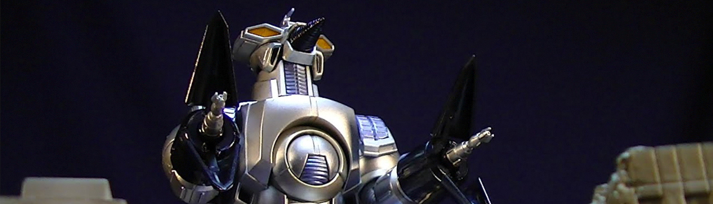

Facebook
Twitter
Instagram
Descripcion rapida
Kaiju es una palabra japonesa que quiere decir bestia extraña o bestia gigante, pero es generalmente traducido al inglés como "monstruo"
Mis RRSS
M.O.G.U.E.R.A. foi construído dos destroços restantes de MechaGodzilla em outra tentativa de matar Godzilla.
Moguera el Primer mega robot humano
SpaceGodzilla parece a Godzilla, pero tiene de color azul marino y la piel de color rojizo-púrpura oscuro y es más alto. Él tiene dos grandes cristales de hombro en cada hombro. Él tiene una cola más larga y tiene algún otro tipo de placas dorsales en su espalda. SpaceGodzilla es algo de sobrepeso y no puede moverse tan bien, que él lo compensa por tener la capacidad de volar. Además él tiene dientes afilados colmillos y en los lados de la boca. SpaceGodzilla tiene ojos rojos y una corona de color naranja en la frente.